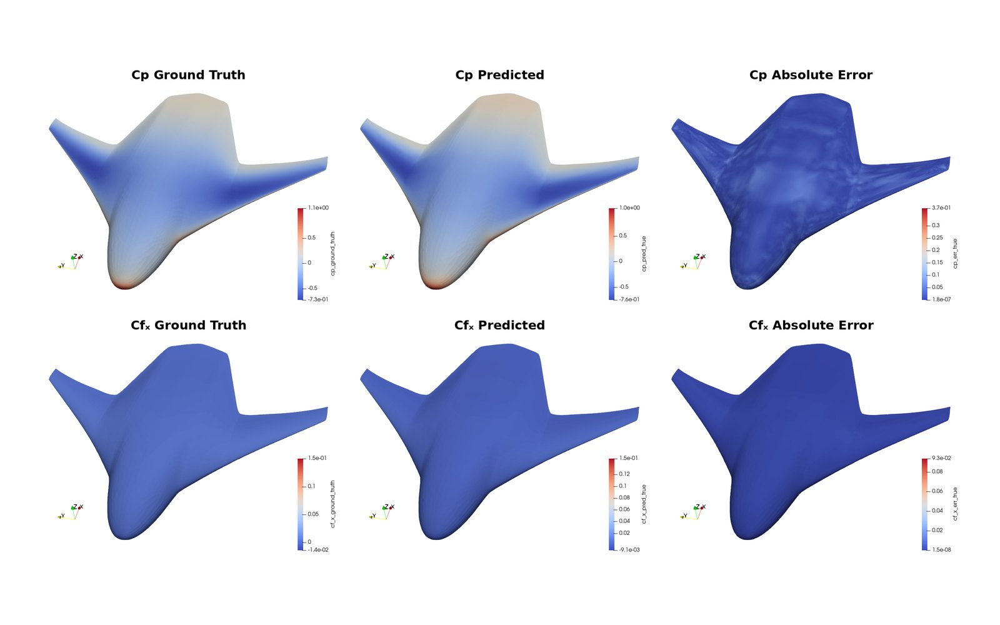
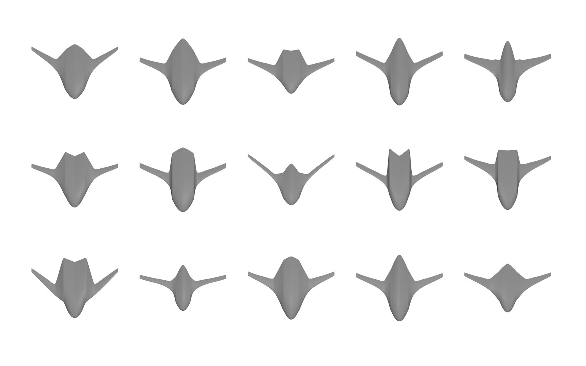

Try the models yourself
These demos run on my workstation at MIT and reach your browser through a secure tunnel, so what you see are the real models from the papers. If a demo shows as offline, the machine is down or busy: email me and I will bring it back up.
Predict the surface flow on a new aircraft shape
Set a blended wing body planform and a flight condition. The demo builds the aircraft with OpenVSP, predicts its lift-to-drag ratio, can reshape it for a higher one, and colors the surface with the pressure and skin friction predicted by the neural model.
What to try
- Click Show Initial to build the default aircraft. This takes a few seconds.
- Open the Predict Aerodynamic Coefficients tab and click Run & Predict to color the surface.
- Back on Optimize L/D, click Optimize & Morph and drag the frame slider to watch the shape change.

This demo is offline right now
It runs on my workstation, which is down or busy at the moment. The figure above is from the paper. Email me and I will bring the demo back up.
Generate an aircraft for a target lift-to-drag ratio
Give a flight condition and the lift-to-drag ratio you want. A diffusion model proposes four aircraft shapes with their predicted lift-to-drag ratio, and a second model predicts the pressure and skin friction over the surface of the one you select.
What to try
- Keep the default flight condition and target, and click Generate Candidates. Four designs appear in about 40 seconds.
- Click Select Design under the one you like.
- Click Run Field Prediction to see pressure and skin friction on its surface, in about 10 seconds.

This demo is offline right now
It runs on my workstation, which is down or busy at the moment. The figure above is from the paper. Email me and I will bring the demo back up.
Build the airframe and its internal structure
Sliders set the planform and the layout of ribs, spars and frames. nTop builds the outer surface and the internal structure on my workstation, and you can turn both in 3D. The Pareto explorer runs the inverse design: it searches for low-mass designs for a mission and builds three of them.
What to try
- In the 3D viewer, click Build geometry. The build takes about 40 seconds.
- Change the number of ribs or the wing sweep and build again to compare.
- In the Pareto explorer, click Run inverse design. The search takes about 75 seconds, then three designs are built.
Each build uses a licensed copy of nTop, so this demo is limited to 30 builds an hour.

This demo is offline right now
It runs on my workstation, which is down or busy at the moment. The figure above is from the paper. Email me and I will bring the demo back up.